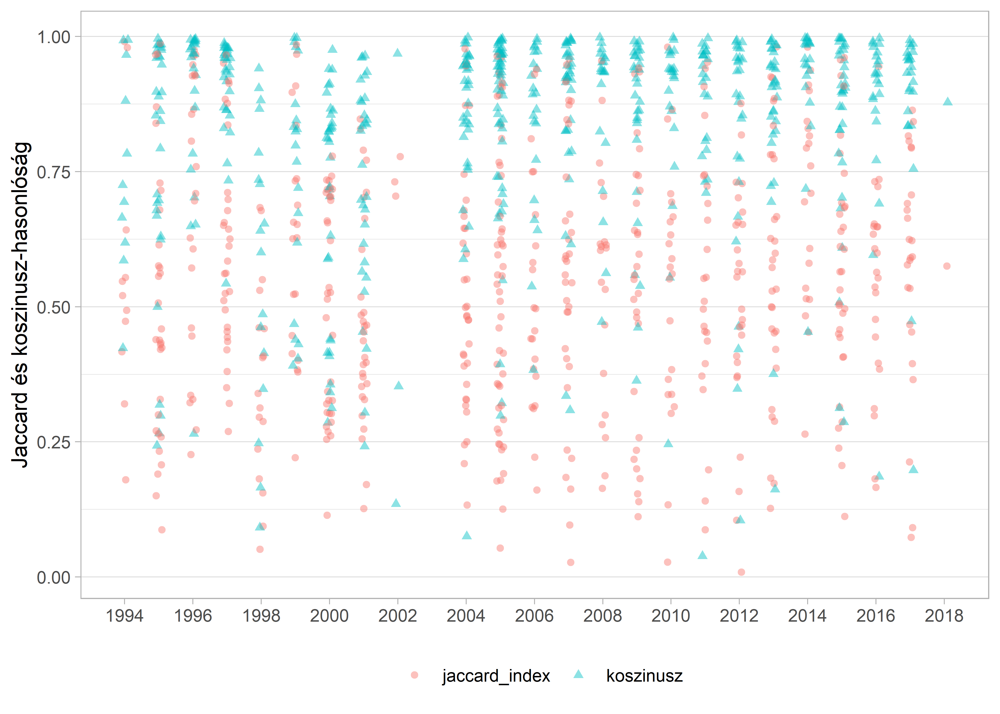

10 Szövegösszehasonlítás
10.1 A szövegösszehasonlítás különböző megközelítései
A gépi szövegösszehasonlítás a mindennapi életünk számos területén megjelenő szövegbányászati technika, bár az emberek többsége nincs ennek tudatában. Ezen a módszeren alapulnak a böngészők kereső mechanizmusai, vagy a kérdés-felelet (Q&A) fórumok algoritmusai, melyek ellenőrzik, hogy szerepel-e már a feltenni kívánt kérdés a fórumon (Sieg 2018). Alkalmazzák továbbá a szövegösszehasonlítást a gépi szövegfordításban és az automatikus kérdésmegválaszolási feladatok esetén is (Wang and Dong 2020), de akár automatizált esszéértékelésre vagy plágiumellenőrzésre is hasznosítható az eljárás (Bar, Zesch, and Gurevych 2011).
A szövegösszehasonlítás hétköznapi életben előforduló rejtett alkalmazásain túl a társadalomtudományok művelői is számos esetben hasznosítják az eljárást. A politikatudomány területén többek között használhatjuk arra, hogy eldöntsük, mennyire különböznek egymástól a benyújtott törvényjavaslatok és az elfogadott törvények szövegei, ezzel fontos információhoz jutva arról, hogy milyen szerepe van a parlamenti vitának a végleges törvények kialakításában. Egy másik példa a szakpolitikai prioritásokban és alapelvekben végbemenő változások elemzése, melyet például szakpolitikai javaslatok vagy ilyen témájú viták leiratainak elemzésével is megtehetünk.
A könyv korábbi fejezeteiben bemutatott eljárások között több olyat találunk, melyek alkalmasak arra, hogy a szövegek hasonlóságából valamilyen információt nyerjünk. Ugyanakkor vannak módszerek, melyek segítségével számszerűsíthetjük a szövegek közötti különbségeket. Ez a fejezet ezekről nyújt rövid áttekintést. Mindenekelőtt azonban azt kell tisztáznunk, hogy miként értelmezzük a hasonlóságot. A hasonlóságelemzéseket jellemzően két nagy kategóriába szoktuk sorolni a mérni kívánt hasonlóság típusa szerint. Ez alapján beszélhetünk lexikális (formai) és szemantikai hasonlóságról.
10.2 Lexikális hasonlóság
A lexikális hasonlóság a gépi szövegfeldolgozás egy egyszerűbb megközelítése, amikor nem várjuk el az elemzésünktől, hogy „értse” a szöveget, csupán a formai hasonlóságot figyeljük. A megközelítés előnye, hogy számítási szempontból jelentősen egyszerűbb, mint a szemantikai hasonlóságra irányuló elemzések, hátránya azonban, hogy az egyszerűség könnyen tévútra vihet szofisztikáltabb elemzések esetén. Így például a lexikális hasonlóság szempontjából az alábbi két példamondat azonosnak tekinthető, hiszen formailag (kifejezések szintjén) megegyeznek.
1. „A boszorkány megsüti Jancsit és Juliskát.”
2. „Jancsi és Juliska megsüti a boszorkányt.”
Két dokumentum közötti lexikális hasonlóságot a szöveg számos szintjén mérhetjük: karakterláncok (stringek), szóalakok (tokenek), n-gramok (n egységből álló karakterláncok), szózsákok (bag of words) között, de akár a dokumentum nagyobb egységei, így szövegrészletek és dokumentumok között is. Bevett megközelítés továbbá a szókészlet összehasonlítása, melyet lexikális és szemantikai hasonlóság feltárására egyaránt használhatunk.
A hasonlóság számítására számos metrika létezik. Ezek jelentős része valamilyen távolságszámításon alapul, mint például a koszinus-távolság. Ez a metrika két szövegvektor (a két dokumentum-kifejezés mátrix) által bezárt szög alapján határozza meg a hasonlóságot (Wang and Dong 2020). Mindezt az alábbi képlet szerint:
\[ cos(X,Y)=\frac{X \cdot Y}{\|X\| \|Y\|} \]
vagyis kiszámoljuk a két vektor skaláris szorzatát, amelyet elosztunk a vektorok Euklidészi normáinak (gyakran hívják L2 normának is, és ennek segítségével kapjuk meg a vektorok hosszát) szorzatával. Vegyük az alábbi két példamondatot a koszinusz távolság számításának szemléltetésére:
1. Jancsi és Juliska megsüti a boszorkányt.
2. A pék megsüti a kenyeret.
A két példamondat (vagyis a dokumentumaink) dokumentum-kifejezés mátrixsza az alábbi táblázat szerint fog kinézni. Az X vektor reprezentálja az 1. példamondatot, az Y vektor pedig a második példamondatot.
| Vektor név | jancsi | és | juliska | megsüti | a | boszorkányt | pék | kenyeret |
|---|---|---|---|---|---|---|---|---|
| X | 1 | 1 | 1 | 1 | 1 | 1 | 0 | 0 |
| Y | 0 | 0 | 0 | 1 | 2 | 0 | 1 | 1 |
A két mondat közötti távolság értékét a képlet szerint a következő módon számítjuk ki:
\[ \frac{x_{1}*y_{1}+x_{2}*y_{2}+x_{3}*y_{3}+x_{4}*y_{4}+x_{5}*y_{5}+x_{6}*y_{6}+x_{7}*y_{7}+x_{8}*y_{8}} {\sqrt{x_{1}^2+x_{2}^2+x_{3}^2+x_{4}^2+x_{5}^2+x_{6}^2+x_{7}^2+x_{8}^2}* \sqrt{y_{1}^2+y_{2}^2+y_{3}^2+y_{4}^2+y_{5}^2+y_{6}^2+y_{7}^2+y_{8}^2}} \]
A két példamondat koszinusz-távolságának értéke ennek megfelelően 0,463.
\[ \frac{1*0+1*0+1*0+1*1+1*2+1*0+0*1+0*1} {\sqrt{1^2+1^2+1^2+1^2+1^2+1^2+0^2+0^2}* \sqrt{0^2+0^2+0^2+1^2+2^2+0^2+1^2+1^2}} = \frac{3}{\sqrt{6}*\sqrt{7}}\approx 0,463 \]
A koszinusz-hasonlóság 0 és 1 közötti értékeket vehet fel. 0-ás értéket akkor kapunk, ha a dokumentumok egyáltalán nem hasonlítanak egymásra. Geometriai értelmeben ebben az esetben a két szövegvektor 90 fokos szöget zár be, hiszen cos(90) = 0 (Ladd 2020).
Egy másik széles körben alkalmazott dokumentumhasonlósági metrika a Jaccard-hasonlóság, melynek számítása egy egyszerű eljáráson alapul: a két dokumentumban egyező szavak számát elosztja a két dokumentumban szereplő szavak számának uniójával (vagyis a két dokumentumban szereplő szavak számának összegével, melyből kivonja az egyező szavak számának összegét). A Jaccard-hasonlóság tehát azt képes megmutatni, hogy a két dokumentum teljes szószámához képest mekkora az azonos kifejezések aránya (Niwattanakul et al. 2013, 2.o). Ahogy a koszinusz-hasonlóságnál is, itt is 0 és 1 közötti értéket kapunk, ahol a magasabb érték nagyobb hasonlóságra utal.
\[ Jaccard(doc_{1}, doc_{2}) = \frac{|doc_{1}\,\cap \, doc_{2}|}{|doc1 \, \cup \, doc2|} = \frac{|doc_{1} \, \cap \, doc_{2}|}{|doc_{1}| + |doc_{2}| - |doc_{1} \, \cap \, doc_{2} |} \]
10.3 Szemantikai hasonlóság
A szemantikai hasonlóság a lexikai hasonlósággal szemben egy komplexebb számítás, melynek során az algoritmus a szavak tartalmát is képes elemezni. Így például formai szempontból hiába nem azonos az alábbi két példamondat, a szemantikai hasonlóságvizsgálatnak észlelnie kell a tartalmi azonosságot.
1. „A diákok jegyzetelnek, amíg a professzor előadást tart.”
2. „A nebulók írnak, amikor az oktató beszél.”
A jelentésbeli hasonlóság kimutatására számos megközelítés létezik. Többek között alkalmazható a témamodellezés (topikmodellezés), melyet a Felügyelet nélküli tanulás fejezetben tárgyaltunk bővebben, ezen belül pedig az LDA Látens Dirichlet-Allokáció (Latent Dirichlet Allocation), valamint az LSA látens érzelemelemzés (Latent Sentiment Analysis) is nagyszerű lehetőséget kínál arra, hogy az egyes dokumentumainkat tartalmi hasonlóságok alapján csoportosítsuk.
Az LSA-nél és az LDA-nél azonban egy fokkal komplexebb megközelítés a szóbeágyazás, melyet a Szóbeágyazások című fejezetben mutattunk be. Ez a módszertan a témamodellezéshez képest a szöveg mélyebb szemantikai tartalmait is képes feltárni, hiszen a beágyazásnak köszönhetően képes formailag különböző, de jelentésükben azonos kifejezések azonosságát megmutatni. A jelentésbeli hasonlóság megállapítható a beágyazás során létrehozott vektorreprezentációkból (emlékezzünk: a hasonló vektorreprezentáció hasonló szemantikai tartalomra utal). Kimutathatjuk a szemantikai közelséget például a király – férfi – lovag kifejezések között, de olyan mesterségesen létrehozott jelentésbeli azonosságokat is feltárhatunk, mint az irányítószámok és az általuk jelölt városnevek kapcsolata. Abban az esetben, ha a szóbeágyazást kimondottan a szöveghasonlóság megállapítására szeretnénk használni, a WMD (Word Mover’s Distance) metrikát érdemes használni, mely a vektortérben elhelyezkedő szóvektorok közötti távolság által számszerűsíti a szövegek hasonlóságát (Kusner et al. 2015).
10.4 Hasonlóságszámítás
10.4.1 Adatbázis-importálás és előkészítés
A fejezet második felében a lexikai hasonlóság vizsgálatára, ezen belül a Jaccard-hasonlóság és a koszinusz-hasonlóság számítására mutatunk be egy-egy példát a törvényjavaslatok és az elfogadott törvények szövegeinek összehasonlításával. Az alábbiakban bemutatott elemzés a (Sebők et al. 2021) megjelenés előtt álló tanulmányból meríti elemzési fókuszát. Az eredeti cikk által megvalósított elemzést a svájci korpusz elemzése nélkül, a magyar korpusz egy részhalmazán replikáljuk az alábbiakban. A kutatási kérdés arra irányul, hogy mennyiben változik meg a törvényjavaslatok szövege a parlamenti vita folyamán, amíg a javaslat elfogadásra kerül. Az elemzés során a különböző kormányzati ciklusok közötti eltérésekre világítunk rá. Az elemzés megkezdése előtt a már ismert módon betöltjük a szükséges csomagokat.
library(stringr)
library(dplyr)
library(tidyr)
library(quanteda)
library(quanteda.textstats)
library(readtext)
library(ggplot2)
library(HunMineR)Ezt követően betöltjük azokat az adatbázisokat, amelyeken a szövegösszehasonlítást fogjuk végezni: az elfogadott törvények szövegét tartalmazó korpuszt, a törvényjavaslatok szövegét tartalmazó korpuszt, valamint az ezek összekapcsolását segítő adatbázist, melyben az összetartozó törvényjavaslatok és törvények azonosítóját (id-ját) tároltuk el. Ahogy behívjuk a három adattáblát, érdemes rögtön lekérni az oszlopneveket colnames() és a táblázat dimenzióit dim(), hogy lássuk, milyen adatok állnak a rendelkezésünkre, és mekkora táblákkal fogunk dolgozni. A dim() függvény első értéke a sorok száma, a második pedig az oszlopok száma lesz az adott táblázatban.
torvenyek <- HunMineR::data_lawtext_sample
colnames(torvenyek)
#> [1] "tv_id" "torveny_szoveg" "korm_ciklus"
#> [4] "ev" "korm_ell"
dim(torvenyek)
#> [1] 600 5tv_javaslatok <- HunMineR::data_lawprop_sample
colnames(tv_javaslatok)
#> [1] "tvjav_id" "tvjav_szoveg"
dim(tv_javaslatok)
#> [1] 600 2parok <- HunMineR::data_lawsample_match
colnames(parok)
#> [1] "tv_id" "tvjav_id"
dim(parok)
#> [1] 600 2A beimportált adatbázisok megfigyeléseinek száma egységesen 600. Ez a több mint háromezer megfigyelést tartalmazó eredeti korpusz egy részhalmaza, mely gyorsabb és egyszerűbb elemzést tesz lehetővé. Az oszlopnevek lekérésével láthatjuk, hogy a törvénykorpuszban van néhány metaadat, amelyet az elemzés során felhasználhatunk: ezek a kormányzati ciklusra, a törvény elfogadásának évére, valamint a benyújtó kormánypárti vagy ellenzéki pártállására vonatkoznak. Ezenkívül rendelkezésre állnak a törvényeket és a törvényjavaslatokat azonosító kódok (tv_id és tvjav_id), melyek segítségével majd tudjuk párosítani az összetartozó törvényjavaslatok és törvények szövegeit. Ezt a left_join() függvénnyel tesszük meg. Elsőként a törvényeket tartalmazó adatbázishoz kapcsoljuk hozzá a törvény–törvényjavaslat párokat tartalmazó adatbázist a törvények azonosítója (tv_id) alapján. A colnames() függvény használatával ellenőrizhetjük, hogy sikeres volt-e a művelet, és az új táblában szerepelnek-e a kívánt oszlopok.
tv_tvjavid_osszekapcs <- left_join(torvenyek, parok)
colnames(tv_tvjavid_osszekapcs)
#> [1] "tv_id" "torveny_szoveg" "korm_ciklus"
#> [4] "ev" "korm_ell" "tvjav_id"
dim(tv_tvjavid_osszekapcs)
#> [1] 600 6Második lépésben a törvényjavaslatokat tartalmazó adatbázist rendeljük hozzá az előzőekben már összekapcsolt két adatbázishoz.
tv_tvjav_minta <- left_join(tv_tvjavid_osszekapcs, tv_javaslatok)
colnames(tv_tvjav_minta)
#> [1] "tv_id" "torveny_szoveg" "korm_ciklus"
#> [4] "ev" "korm_ell" "tvjav_id"
#> [7] "tvjav_szoveg"
dim(tv_tvjav_minta)
#> [1] 600 7Ha jól végeztük a dolgunkat az adatbázisok összekapcsolása során, az eljárás végére 7 oszlopunk és 600 sorunk van, vagyis az újonnan létrehozott adatbázisba bekerült az összes változó (oszlop). A korpuszaink egy adattáblában való kezelése azért hasznos, mert így nem kell párhuzamosan elvégezni az azonos műveleteket a két korpusz, a törvények és a törvényjavaslatok tisztításához, hanem párhuzamosan tudunk dolgozni a kettővel. Kicsit közelebbről megvizsgálva az adatbázist, azt láthatjuk, hogy minden adatbázisunkban szereplő kormányzati ciklusra 100 megfigyelés áll rendelkezésünkre: tv_tvjav_minta %>% count(korm_ciklus).
tv_tvjav_minta %>%
count(korm_ciklus)
#> # A tibble: 6 x 2
#> korm_ciklus n
#> <chr> <int>
#> 1 1994-1998 100
#> 2 1998-2002 100
#> 3 2002-2006 100
#> 4 2006-2010 100
#> 5 2010-2014 100
#> 6 2014-2018 100Hasonlóan ellenőrizhetjük az egyes évekre eső megfigyelések számát is.
tv_tvjav_minta %>%
count(ev)
#> # A tibble: 24 x 2
#> ev n
#> <dbl> <int>
#> 1 1994 11
#> 2 1995 31
#> 3 1996 23
#> 4 1997 31
#> 5 1998 17
#> 6 1999 20
#> 7 2000 34
#> 8 2001 30
#> 9 2002 3
#> 10 2004 35
#> # ... with 14 more rows10.5 Szövegtisztítás
Mivel az elemzés során két különböző korpusszal dolgozunk – két oszlopnyi szöveggel –, egyszerűbb, ha a szövegtisztítás lépéseiből létrehozunk egy külön függvényt, amely magában foglalja a művelet egyes lépéseit, és lehetővé teszi, hogy ne kelljen minden szövegtisztítási lépést külön definiálni az egyes korpuszok esetén.
A függvény neve jelen esetben szovegtisztitas lesz, és a már ismert lépéseket foglalja magában: kontrollkarakterek szóközzé alakítása, központozás és a számok eltávolítása. Kisbetűsítés, ismétlődő stringek és a stringek előtt található szóközök eltávolítása. Továbbá a str_remove_all() függvénnyel eltávolítjuk azokat az írásjeleket, amelyek előfordulnak a szövegben, de számunkra nem hasznosak.
A függvény definiálását az alábbi szintaxissal tehetjük meg.
fuggveny <- function(bemenet) {
elvegzendo_lepesek
return(kimenet)
}A bemenet helyen azt jelöljük, hogy milyen objektumon fogjuk végrehajtani a műveleteket, a kimenetet pedig a return() függvénnyel definiáljuk, ez lesz a függvényünk úgynevezett visszatérési értéke, vagyis az elvégzendő lépések szerint átalakított objektum. A szövegtisztító függvény bemeneti és kimeneti értéke is text lesz, mivel ebbe a változóba mentettük az elvégzendő változtatásokat.
szovegtisztitas <- function(text) {
text = str_replace(text, "[:cntrl:]", " ")
text = str_remove_all(string = text, pattern = "[:punct:]")
text = str_remove_all(string = text, pattern = "[:digit:]")
text = str_to_lower(text)
text = str_trim(text)
text = str_squish(text)
return(text)
}Miután létrehoztuk a szövegtisztításra alkalmas függvényünket, az adatbázis két oszlopára fogjuk alkalmazni: a törvények szövegét és a törvényjavaslatok szövegét tartalmazó oszlopra, amiben a mapply() függvény lesz a segítségünkre. A mapply() függvényen belül megadjuk megadjuk az adattáblát és hivatkozunk annak releváns oszlopaira tv_tvjav_minta[ ,c("torveny_szoveg","tvjav_szoveg")]. Az alkalmazni kívánt függvényt a FUN argumentumaként adhatjuk meg – értelemszerűen ez esetünkben az előzőekben létrehozott szovegtisztitas függvény lesz. Végezetül pedig a függvényünk által megtisztított új oszlopokkal felülírjuk az előző adatbázisunk vonatkozó oszlopait, vagyis a torveny_szoveg és a tvjav_szoveg oszlopokat: tv_tvjav_minta[, c("torveny_szoveg","tvjav_szoveg")].
Amennyiben számítunk rá, hogy még változhatnak a szövegeket tartalmazó oszlopok, akkor érdemes előre definiálni a szöveges oszlopok neveit, hogy később csak egy helyen kelljen változtatni a kódon.
szovegek <- c("torveny_szoveg", "tvjav_szoveg")
tv_tvjav_minta[, szovegek] <- mapply(tv_tvjav_minta[, szovegek], FUN = szovegtisztitas)A szövegtisztítás következő lépése a stopszavak meghatározása és kiszűrése a szövegből. Itt a quanteda csomagban elérhető magyar nyelvű stopszavakat, valamint a 7. fejezetben meghatározott speciális jogi stopszavak listáját használjuk.
legal_stopwords <- HunMineR::data_legal_stopwordsA stopszavak beimportálását követően korpusszá alakítjuk a szövegeinket és tokenizáljuk azokat. Ezt már külön-külön végezzük el a törvények és a törvényjavaslatok szövegeire, azonos lépésekben haladva. A létrehozott objektumokat itt is ellenőrizhetjük, például a summary(torvenyek_coprus) paranccsal, vagy a torvenyek_tokens[1:3] paranccsal, mely az első 3 dokumentum tokenjeit fogja megmutatni.
torvenyek_corpus <- corpus(tv_tvjav_minta$torveny_szoveg)
tv_javaslatok_corpus <- corpus(tv_tvjav_minta$tvjav_szoveg)torvenyek_tokens <- tokens(torvenyek_corpus) %>%
tokens_remove(stopwords("hungarian")) %>%
tokens_remove(legal_stopwords) %>%
tokens_wordstem(language = "hun")
tv_javaslatok_tokens <- tokens(tv_javaslatok_corpus) %>%
tokens_remove(stopwords("hungarian")) %>%
tokens_remove(legal_stopwords) %>%
tokens_wordstem(language = "hun")A szövegek tokenizálásával és a stopszavak eltávolításával a szövegtisztítás végére értünk, így megkezdhetjük az elemzést.
10.6 A Jaccard-hasonlóság számítása
A Jaccard-hasonlóság kiszámításához a quanteda.textstats textstat_simil() függvényét fogjuk alkalmazni. Mivel a textstat_simil() függvény dokumentum-kifejezés mátrixot vár bemenetként, elsőként alakítsuk át ennek megfelelően a korpuszainkat. Az előző fejezetekhez hasonlóan itt is a TF-IDF súlyozást választottuk a mátrix létrehozásakor.
torvenyek_dfm <- dfm(torvenyek_tokens) %>%
dfm_tfidf()
tv_javaslatok_dfm <- dfm(tv_javaslatok_tokens) %>%
dfm_tfidf()Miután létrehoztuk a dokumentum-kifejezés mátrixokat, érdemes a leggyakoribb tokeneket ellenőrizni a textstat_frequency() függvénnyel, hogy biztosak lehessünk abban, hogy a megfelelő eredményt értük el a szövegtisztítás során. (Amennyiben nem vagyunk elégedettek, érdemes visszatérni a stopszavakhoz és újabb kifejezéseket hozzárendelni a stopszólistához.)
tv_toptokens <- textstat_frequency(torvenyek_dfm, n = 10, force = TRUE)
tv_toptokens
#> feature frequency rank docfreq group
#> 1 an 6992.110 1 131 all
#> 2 szerzodo 4794.806 2 150 all
#> 3 felhalmozás 3617.640 3 28 all
#> 4 articl 3425.718 4 74 all
#> 5 kiadás 3327.803 5 224 all
#> 6 for 3304.808 6 100 all
#> 7 contracting 3295.353 7 39 all
#> 8 költségvetés 3129.739 8 206 all
#> 9 befektetés 3129.628 9 73 all
#> 10 szanálás 2629.448 10 13 alltvjav_toptokens <- textstat_frequency(tv_javaslatok_dfm, n = 10, force = TRUE)
tvjav_toptokens
#> feature frequency rank docfreq group
#> 1 an 6050.864 1 160 all
#> 2 szerzodo 4533.032 2 148 all
#> 3 articl 3489.540 3 75 all
#> 4 befektetés 3447.234 4 90 all
#> 5 buncselekmény 3274.250 5 96 all
#> 6 contracting 3266.005 6 40 all
#> 7 szanálás 3234.839 7 12 all
#> 8 bíróság 3225.629 8 301 all
#> 9 egyezmény 3045.205 9 231 all
#> 10 for 3045.119 10 109 allA létrehozott dokumentum-kifejezés mátrixokon elvégezhetjük a dokumentumhasonlóság-vizsgálatot. A Jaccard-hasonlóság-metrika, illetve a quanteda
textstat_simil() függvénye alkalmazható egy korpuszra is. Egy korpuszra végezve az elemzést, a függvény a korpusz dokumentumai közötti hasonlóságot számítja ki, míg két korpuszra mindkét korpusz összes dokumentuma közötti hasonlóságot. Érdemes továbbá azt is megjegyezni, hogy a textstat_simil() method argumentumaként megadható számos más hasonlósági metrika is, melyekkel további érdekes számítások végezhetők. Bővebben a textstat_simil() függény használatáról és argumentumairól a quanteda hivatalos honlapján olvashatunk.44 A textstat_simil() függvény kapcsán azt is érdemes figyelembe venni, hogy mivel nemcsak a dokumentum párokra, hanem az összes bemenetként megadott dokumentumra külön kiszámítja a Jaccard-indexet, a korpusz(ok) méretének növelésével a számítás kapacitás- és időigényessége exponenciálisan növekszik. Két 600 dokumentumból álló korpusz esetén kb. 4–5 perc a számítási idő, míg 360 dokumentum esetén csupán 1–2 perc.
jaccard_hasonlosag <- textstat_simil(torvenyek_dfm, tv_javaslatok_dfm, method = "jaccard")Mivel az eredménymátrixunk meglehetősen terjedelmes, nem érdemes az egészet egyben megtekinteni, egyszerűbb az első néhány dokumentum közötti hasonlóságra szűrni, melyet a szögletes zárójelben való indexeléssel tudunk megtenni. Az [1:5, 1:5] kifejezéssel specifikálhatjuk a sorokat és az oszlopkat az elsőtől az ötödikig.
jaccard_hasonlosag[1:5, 1:5]
#> 5 x 5 Matrix of class "dgeMatrix"
#> text1 text2 text3 text4
#> text1 0.55407750 0.12565172 0.11437309 0.12500000
#> text2 0.09830508 0.57181572 0.12781350 0.16494845
#> text3 0.08797954 0.12447257 0.72876712 0.10216718
#> text4 0.10887290 0.18933333 0.11823802 0.57200000
#> text5 0.15041322 0.09396914 0.08807829 0.09842271
#> text5
#> text1 0.15256496
#> text2 0.09432387
#> text3 0.07635695
#> text4 0.11339359
#> text5 0.62733813A mátrix fődiagonáljában jelennek meg az összetartozó törvényekre és törvényszövegekre vonatkozó értékek, minden más érték nem összetartozó törvény- és törvényjavaslat-szövegek hasonlóságára vonatkozik, vagyis a vizsgálatunk szempontjából irreleváns. A mátrix diagonálját a diag() függvény segítségével nyerhetjük ki. Ha jól dolgoztunk, a létrehozott jaccard_diag első öt eleme (jaccard_diag[1:5]) megegyezik a fent megjelenített 5 × 5-ös mátrix fődiagonáljában elhelyezkedő értékekkel, hossza pedig (length()) a mátrix bármelyik dimenziójával.
jaccard_diag <- diag(as.matrix(jaccard_hasonlosag))
jaccard_diag[1:5]
#> text1 text2 text3 text4 text5
#> 0.5540775 0.5718157 0.7287671 0.5720000 0.6273381Miután sikerült kinyerni az egyes törvény–törvényjavaslat párokra vonatkozó Jaccard-értéket, érdemes a számításainkat hozzárendelni az eredeti adattáblánkhoz, hogy a meglévő metaadatok fényében tudjuk kiértékelni az egyes dokumentumok közötti hasonlóságot. A hozzárendeléshez egyszerűen definiálunk egy új oszlopot a meglévő adatbázisban tv_tvjav_minta$jaccard_index, melyhez hozzárendeljük a diagonálból kinyert értékeket.
tv_tvjav_minta$jaccard_index <- jaccard_diagÉrdemes megnézni a végeredményt, ellenőrizni a Jaccard-hasonlóság legmagasabb vagy legalacsonyabb értékeit. A top_n() függvény használatával ki tudjuk válogatni a legmagasabb és a legalacsonyabb értékeket. A top_n() függvény első argumentuma a változó lesz, ami alapján a legalacsonyabb és a legmagasabb értékeket keressük, a második argumentum pedig azt specifikálja, hogy a legmagasabb és a legalacsonyabb értékek közül hányat szeretnénk látni. Az n=5 értékkel a legmagasabb, az n=-5 értékkel a legalacsonyabb 5 Jaccard-indexszel rendelkező sort tudjuk kiszűrni. Emellett érdemes arra is odafigyelni, hogy a szövegeket tartalmazó oszlopainkat ne próbáljuk meg kiíratni, hiszen ez jelentősen lelassítja az RStudio működését és csökkenti a kiírt eredmények áttekinthetőségét.
tvjav_oszlopok <- c(
"tv_id",
"korm_ciklus",
"tvjav_id",
"jaccard_index"
)
tv_tvjav_minta[, tvjav_oszlopok] %>%
top_n(jaccard_index, n = 5)
#> # A tibble: 5 x 4
#> tv_id korm_ciklus tvjav_id jaccard_index
#> <chr> <chr> <chr> <dbl>
#> 1 1994XCV 1994-1998 1994-1998_T0276 0.991
#> 2 1995LXXXI 1994-1998 1994-1998_T1296 0.987
#> 3 1999XXXV 1998-2002 1998-2002_T0807 0.985
#> 4 2013XLII 2010-2014 2010-2014_T10219 0.981
#> 5 2014VIII 2010-2014 2010-2014_T13631 0.980tv_tvjav_minta[, tvjav_oszlopok] %>%
top_n(jaccard_index, n = -5)
#> # A tibble: 5 x 4
#> tv_id korm_ciklus tvjav_id jaccard_index
#> <chr> <chr> <chr> <dbl>
#> 1 1998I 1994-1998 1994-1998_T4328 0.0513
#> 2 2005LII 2002-2006 2002-2006_T162~ 0.0532
#> 3 2007CLXVIII 2006-2010 2006-2010_T046~ 0.0270
#> 4 2010CLV 2010-2014 2010-2014_T018~ 0.0273
#> 5 2012CXCV 2010-2014 2010-2014_T091~ 0.0089510.7 A koszinusz-hasonlóság számítása
A Jaccard-hasonlóság számítása után a koszinusz-távolság számítása már nem jelent nagy kihívást, hiszen a textat_simil() függvénnyel ezt is kiszámíthatjuk, csupán a metrika paramétereként (method =) megadhatjuk a koszinuszt is. Ahogy az előbbiekben, itt is a dokumentum-kifejezés mátrixokat adjuk meg bemeneti értékként.
koszinusz_hasonlosag <- textstat_simil(x = torvenyek_dfm, y = tv_javaslatok_dfm, method = "cosine")Érdemes itt is megtekinteni a mátrix első néhány sorába és oszlopába eső értékeket.
koszinusz_hasonlosag[0:5, 0:5]
#> 5 x 5 Matrix of class "dgeMatrix"
#> text1 text2 text3 text4
#> text1 0.61881872 0.015832786 0.016163982 0.014361259
#> text2 0.01051437 0.928929092 0.006185991 0.045378617
#> text3 0.01484353 0.007634593 0.984988124 0.005659447
#> text4 0.01845665 0.050139950 0.005569874 0.960631668
#> text5 0.07399905 0.006867184 0.002846785 0.017476290
#> text5
#> text1 0.055145416
#> text2 0.007042933
#> text3 0.001826568
#> text4 0.018335364
#> text5 0.753752459Ebben az esetben is csak a mátrix diagonáljára van szükségünk, melyet a fent ismertetett módon nyerünk ki a mátrixból.
koszinusz_diag <- diag(as.matrix(koszinusz_hasonlosag))
koszinusz_diag[1:5]
#> text1 text2 text3 text4 text5
#> 0.6188187 0.9289291 0.9849881 0.9606317 0.7537525Végezetül pedig a diagonálból kinyert koszinusz értékeket is hozzárendeljük az adatbázisunkhoz.
tv_tvjav_minta$koszinusz <- koszinusz_diagA kibővített adatbázis oszlopneveit a colnames() függvénnyel ellenőrizhetjük, hogy lássuk, valóban sikerült-e hozzárendelnünk a koszinusz értékeket a táblához.
colnames(tv_tvjav_minta)
#> [1] "tv_id" "torveny_szoveg" "korm_ciklus"
#> [4] "ev" "korm_ell" "tvjav_id"
#> [7] "tvjav_szoveg" "jaccard_index" "koszinusz"10.8 Az eredmények vizualizációja
A hasonlósági metrikák vizulizációjára gyakran alkalmazott megoldás a hőtérkép (heatmap), mellyel korrelációs mátrixokat ábrázolhatunk. Ebben az esetben a mátrix értékeit egy színskálán vizualizáljuk, ahol a világosabb színek a magasabb, a sötétebb színek az alacsonyabb értékeket jelölik. A Jaccard-hasonlóság számításakor és a koszinusz-hasonlóság számításakor kapott mátrixok esetén is ábrázolhatjuk az értékeinket ilyen módon. Mivel azonban mindkét mátrix 600 × 600-as, nem érdemes a teljes mátrixot megjeleníteni, mert ilyen nagy mennyiségű adatnál már értelmezhetetlenné válik az ábra, így csak az utolsó 100 elemet, vagyis a 2014–2018-as időszakra vonatkozó értékeket jelenítjük meg. Ezt a koszinusz_hasonlóság nevű objektumunk feldarabolásával tesszük meg, szögletes zárójelben jelölve, hogy a mátrix mely sorait és mely oszlopait szeretnénk használni: koszinusz_hasonlosag[501:600, 501:600]. A koszinusz_hasonlosag objektumból egy data frame-et készítünk, ahol a dokumentumok közötti hasonlóság szerepel. A mátrix formátumból a tidyr csomag pivot_longer() függvényét használva tudjuk a kívánt formátumot elérni.
koszinusz_df <- as.matrix(koszinusz_hasonlosag[501:600, 501:600]) %>%
as.data.frame() %>%
rownames_to_column("docs1") %>%
pivot_longer(
"text501":"text600",
names_to = "docs2",
values_to = "similarity"
)
glimpse(koszinusz_df)
#> Rows: 10,000
#> Columns: 3
#> $ docs1 <chr> "text501", "text501", "text501", "~
#> $ docs2 <chr> "text501", "text502", "text503", "~
#> $ similarity <dbl> 0.956008320, 0.022967812, 0.042582~Ezt követően pedig a ggplot függvényt használva a geom_tile segítségével tudjuk elkészíteni a hőtérképet, ami a hasonlósági mátrixot ábrázolja.
ggplot(koszinusz_df, aes(docs1, docs2, fill = similarity)) +
geom_tile() +
scale_fill_gradient(high = "#2c3e50", low = "#bdc3c7") +
labs(
x = NULL,
y = NULL,
fill = "Koszinusz-hasonlóság"
) +
theme(
axis.text.x=element_blank(),
axis.ticks.x=element_blank(),
axis.text.y=element_blank(),
axis.ticks.y=element_blank()
)
A Jaccard-hasonlósági hőtérképet ugyanezzel a módszerrel tudjuk elkészíteni.
# adatok átalakítása
jaccard_df <- as.matrix(jaccard_hasonlosag[501:600, 501:600]) %>%
as.data.frame() %>%
rownames_to_column("docs1") %>%
pivot_longer(
"text501":"text600",
names_to = "docs2",
values_to = "similarity"
)
# a ggplot ábra
ggplot(jaccard_df, aes(docs1, docs2, fill = similarity)) +
geom_tile() +
scale_fill_gradient(high = "#2c3e50", low = "#bdc3c7") +
labs(
x = NULL,
y = NULL,
fill = "Jaccard hasonlóság"
) +
theme(
axis.text.x=element_blank(),
axis.ticks.x=element_blank(),
axis.text.y=element_blank(),
axis.ticks.y=element_blank()
)
A két plot összehasonlításánál láthatjuk, hogy a koszinusz-hasonlóság általában magasabb hasonlósági értékeket mutat. A mátrix főátlójában kiugró világos csík azt mutatja meg, hogy a legnagyobb hasonlóság az összetartozó törvény- és törvényjavaslat-szövegek között mutatkozik meg, eddig tehát az adataink az elvárásaink szerinti képet mutatják. Amennyiben a világos csíkot nem látnánk, az egyértelmű visszajelzés volna arról, hogy elrontottunk valamit a szövegelőkészítés eddigi lépései során, vagy a várakozásásaink voltak teljesen rosszak.
A koszinusz- és a Jaccard-hasonlóság értékét ábrázolhatjuk közös pont-diagramon a geom_jitter() segítségével. Ehhez először egy kicsit átalakítjuk a data frame-et a tidyr csomag pivot_longer() függvényével, hogy a két hasonlósági érték egy oszlopban legyen. Ez azért szükséges, hogy a ggplot ábránkat könnyebben tudjuk létrehozni.
tv_tvjav_tidy <- tv_tvjav_minta %>%
pivot_longer(
"jaccard_index":"koszinusz",
values_to = "hasonlosag",
names_to = "hasonlosag_tipus"
)
glimpse(tv_tvjav_tidy)
#> Rows: 1,200
#> Columns: 9
#> $ tv_id <chr> "1994LXXXII", "1994LXXXII", ~
#> $ torveny_szoveg <chr> "évi lxxxii törvény a magáns~
#> $ korm_ciklus <chr> "1994-1998", "1994-1998", "1~
#> $ ev <dbl> 1994, 1994, 1996, 1996, 1995~
#> $ korm_ell <dbl> 900, 900, 900, 900, 900, 900~
#> $ tvjav_id <chr> "1994-1998_T0233", "1994-199~
#> $ tvjav_szoveg <chr> "magyar köztársaság kormánya~
#> $ hasonlosag_tipus <chr> "jaccard_index", "koszinusz"~
#> $ hasonlosag <dbl> 0.5540775, 0.6188187, 0.5718~ggplot(tv_tvjav_tidy, aes(ev, hasonlosag)) +
geom_jitter(aes(shape = hasonlosag_tipus,color = hasonlosag_tipus), width = 0.1, alpha = 0.45) +
scale_x_continuous(breaks = seq(1994, 2018, by = 2)) +
labs(
y = "Jaccard és koszinusz-hasonlóság",
shape = NULL,
color = NULL,
x = NULL
) +
theme(legend.position = "bottom",
panel.grid.major.x = element_blank(),
panel.grid.minor.x = element_blank() )
A hasonlósági értékek évenkénti alakulásának megértése érdekében érdemes átlagot számolni a mutatókra. Ezt a group_by() és a summarize() függvények együttes alkalmazásával tehetjük meg. Megadjuk, hogy évenkénti bontásban szeretnénk a számításainkat elvégezni group_by(ev), és azt, hogy átlagszámítást szeretnénk végezni mean().
evenkenti_atlag <- tv_tvjav_tidy %>%
group_by(ev, hasonlosag_tipus) %>%
summarize(atl_hasonlosag = mean(hasonlosag))
head(evenkenti_atlag)
#> # A tibble: 6 x 3
#> # Groups: ev [3]
#> ev hasonlosag_tipus atl_hasonlosag
#> <dbl> <chr> <dbl>
#> 1 1994 jaccard_index 0.556
#> 2 1994 koszinusz 0.757
#> 3 1995 jaccard_index 0.499
#> 4 1995 koszinusz 0.776
#> 5 1996 jaccard_index 0.675
#> 6 1996 koszinusz 0.880Az évenkénti átlagot tartalmazó adattáblánkra ezt követően vonal diagramot illesztünk. Az ábrán az látható, hogy a Jaccard- és koszinsz-hasonlóság értéke nagyjából együtt mozog, leszámítva a 2002-es, 2003-as éveket, mival azonban itt csak néhány adatpont áll rendelkezésre, ettől az inkonzisztenciától eltekinthetünk.
ggplot(evenkenti_atlag, aes(ev, atl_hasonlosag)) +
geom_line(aes(linetype = hasonlosag_tipus)) +
labs(y = "Átlagos Jaccard- és koszinusz-hasonlóság",
linetype = NULL,
x = NULL) +
theme(
legend.position = "bottom",
panel.grid.major.x = element_blank(),
panel.grid.minor.x = element_blank()
)
Ahhoz, hogy valamivel pontosabb képet kapjunk a Jaccard-index értékének alakulásáról, az eredményeinket érdemes vizualizálni a ggplot2 segítségével. Elsőként évenkénti bontásban, boxplotokkal ábrázoljuk a Jaccard-index értékének alakulását.
ggplot(tv_tvjav_minta, aes(as.factor(ev), jaccard_index)) +
geom_boxplot() +
labs(
x = NULL,
y = "Jaccard-hasonlóság" ) +
theme(
axis.text.x = element_text(angle = 45),
legend.position = "none"
)
A legalacsonyabb Jaccard-hasonlóság talán az 1994–1998-as időszakra jellemző, míg a 2014–2018-as időszakra szembetűnően magas Jaccard-értékeket látunk az első ábrázolt ciklushoz képest. Összességében nehéz trendet látni az ábrán, de érdemes azt is megjegyezni, hogy a negatív irányba kiugró adatpontok a 2014–2018-as ciklusban jelentősen nagyobb arányban tűnnek fel, mint a korábbi kormányzati ciklusok alatt.
Végezetül pedig ábrázolhatjuk a Jaccard-hasonlóságot a benyújtó személye alapján is a korm_ell változónk alapján. A változók értékei a következők a CAP kódkönyve alapján:
0 - Ellenzéki benyújtó
1 - Kormánypárti benyújtó
2 - Kormánypárti és ellenzéki benyújtó közösen
3 - Benyújtók legalább két ellenzéki pártból
4 - Benyújtók legalább két kormánypártból
900 - Nem releváns – a benyújtó a kabinet tagja
901 - Nem releváns – a benyújtó a bizottság tagja
902 - Nem releváns – a benyújtó sem a parlamentnek, sem a kabinetnek, sem a bizottságnak nem tagja
Mivel nincs túl sok adatpontunk, és ezek többsége a 900-as adatpont alá esik (lásd tv_tvjav_minta %>% count(korm_ell)), érdemes összevonni a 0-ás és a 3-as változót, valamint az 1-es és a 4-es változót egy-egy értékbe, hogy jobban elemezhetőek legyenek az eredményeink. Ehhez a korm_ell változó értékei alapján definiálunk egy új korm_ell2 változót. Az új változó definiálását és az értékadásokat a dplyr case_when() függvényével fogjuk megtenni. A függvényen belül a bal oldalra kerül, hogy milyen értékek alapján szeretnénk az új értéket meghatározni, a tilde (~) után pedig az, hogy mi legyen az újonnan létrehozott oszlop értéke. Tehát a case_when()-en belül lévő első sor azt fejezi ki, hogy amennyiben a korm_ell egyenlő 0-val, vagy (|) a korm_ell egyenlő 3-mal, legyen a korm_ell2 értéke 0.
tv_tvjav_minta <- tv_tvjav_minta %>%
mutate(
korm_ell2 = case_when(
korm_ell == 0 | korm_ell == 3 ~ "Ellenzéki képviselő",
korm_ell == 1 | korm_ell == 4 ~ "Kormánypárti képviselő",
korm_ell == 2 ~ "Kormánypárti és ellenzéki képviselők közösen",
korm_ell == 900 ~ "Kabinet tagja",
korm_ell == 901 ~ "Parlamenti bizottság",
korm_ell == 902 ~ "Egyik sem"
),
korm_ell2 = as.factor(korm_ell2)
)Miután létrehoztuk az új oszlopot, létrehozhatjuk a vizualizációt is annak alapján. Itt egy speciális pontdiagramot fogunk használni: geom_jitter(). Ez annyiban különbözik a pontdiagramtól, hogy kicsit szórtabban ábrázolja a diszkrét értékekre (évekre) eső pontokat, hogy az egy helyen sűrűsödő értékek ne takarják ki egymást. A facet_wrap segítségével tudjuk kategóriánként ábrázolni az évenkénti hasonlóságot.
ggplot(tv_tvjav_minta, aes(ev, jaccard_index)) +
geom_jitter(width = 0.1, alpha = 0.5) +
scale_x_continuous(breaks = seq(1994, 2018, by = 2)) +
facet_wrap(~ korm_ell2, ncol = 1) +
labs(
y = "Jaccard-hasonlóság",
x = NULL)
Mivel a törvényjavaslatok túlnyomó többségét a kabinet tagjai nyújtják be, nem igazán tudunk érdemi következtetéseket levonni arra vonatkozóan, hogy az ellenzéki vagy a kormánypárti képviselők által benyújtott javaslatok módosulnak-e többet a vita folyamán. Amennyiben ezzel a kérdéssel alaposabban is szeretnénk foglalkozni, érdemes csak azokat a sorokat kiválasztani a hasonlóságszámításhoz, amelyekben a számunkra releváns megfigyelések szerepelnek. Ha azonban ezt az eljárást választjuk, mindenképpen fontos odafigyelni arra is, hogy az elemzésben használandó megfigyelések kiválogatása nehogy szelektív legyen valamely nem megfigyelt változó szempontjából, ezzel befolyásolva a kutatás eredményeit.